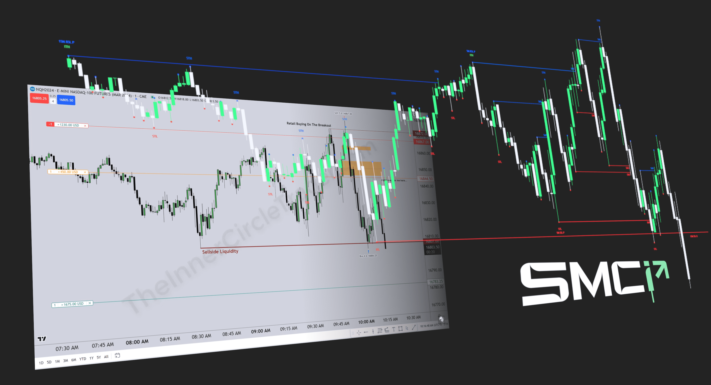

Yu 交易視界

每根 K 棒都由 Open、High、Low、Close 組成。選擇 OHLC 的形成順序，理解價格如何擴張、回撤與鎖定，進一步建立對市場走勢的預期。
Every candle is built from Open, High, Low and Close. The order in which OHLC forms shows how price expands, retraces and continues.
CHOOSE YOUR CANDLE
CHOOSE YOUR CANDLE